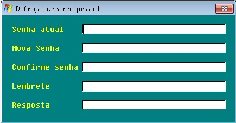
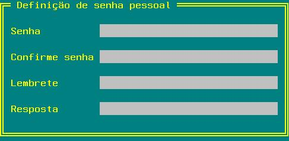

Definição de senha pessoal do usuário corrente.
| Modo gráfico |
|  |
| Modo texto |
|  |
Senha/Confirme senha
Senha secreta de até 30 caracteres. Como a senha não é visível é
preciso que seja digitada 2 vezes para confirmação.
Lembrete/Resposta
Se durante o logon o usuário
tiver esquecido a senha o gerenciador permitirá a definição de uma nova senha somente se
o usuário souber a resposta deste lembrete.